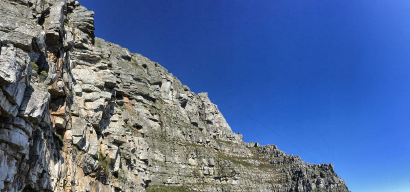

Camping Sites:
Location: Tweede Tol
Description: Limietberg is a pristine nature reserve tucked away in the Du Toitskloof Mountains, near Paarl. The reserve stretches from Franschhoek in the south, eastwards towards Groot Drakenstein, and northwards as far as Voëlvlei Dam and is a World Heritage Site.
Limietberg offers a number of beautiful hikes through steep kloofs and deep valleys. Du Toits Peak, at 1 996m, is the highest point within the reserve. Visitors can also visit the many historical sites along the trails, including ancient rock art, a disused manganese mine and the graves of convicts who helped build the Bainskloof Pass.
To find out more, and for a detailed breakdown of the campsite, download the Limietberg Nature Reserve and Tweede Tol campsite brochure and map.
Rock Climbing
Location: Montagu Rock Climbing
Description: Montagu is recognised as one of the most outstanding climbing destinations in South Africa due to the quality and number of climbing routes available. Montagu’s rock walls offer a wide variety of high quality climbing opportunities at every level from beginner to expert. The small town of Montagu is situated in the Klein Karoo (semi desert region) on the east side of the Langeberg mountain range 2 hours / 200km drive east of Cape Town.
The climate in Montagu is ideal for climbing! It is easy to find either shade or sun, and conditions can be perfect in any season. We have hot summers and crisp winters. Rainfall in the klein karoo is significantly less than in other parts of the Western Cape. When it does rain, it is usually a brief shower, and normally doesn’t interfere with climbing. Find the map to Montagu here
 Location: Rocklands Rock Climbing
Location: Rocklands Rock Climbing
Description: Rocklands is found in the Cederberg mountains 250km/3 hours north of Cape Town. It is a very beautiful area in a semi-desert setting, very isolated and very safe. Rocklands is undoubtedly famous for it's world class bouldering but this should not deter you from sampling the fine sport climbing.
There is a large variety of quality climbing of all grades in both bouldering and sport climbing. All the sport routes are single pitch and you will have to do a small amount of walking to get to the different areas. Most of the original climbing is situated on CapeNature land and thus day or week permits must be obtained. Permits for bouldering are not covered by Wild Cards. Many of the newer areas being developed are on private farms some which have small (30-40 rand) day fees.
You can find route information by clicking here

Location: Silvermine Crags
Description: Silvermine is probably the most popular climbing area on the Cape Peninsula with short walk-ins, good rock quality and many excellent routes. Silvermine has five different crags and over 80 routes with grades ranging from 13 to 28. The crags go into the shade in the early afternoon. The Lower Silvermine Crag has easy routes and is perfect for beginners, Blaze of Glory is a little harder, Silvermine Main Crag is a good all round crag and Fawlty Towers for some harder stuff. The most recent addition is Silverminor Crag.
The Silvermine Crags have been climbed since the 60′s, but the crags first became popular when they were bolted in the 90′s. In 2008, many of classic routes have been re-bolted. Behind the ridge are four different crags: the Lower Silvermine Crag has easy routes and is perfect for beginners, Blaze of Glory is a little harder, Silvermine Main Crag is a good all round crag and Fawlty Towers for some harder stuff. find map Here
Hiking Trail
 Location: Tranquility Cracks
Location: Tranquility Cracks
Description: Tranquility Cracks refers directly to deep fissures in the rocks above Camps Bay through which one passes, about halfway along the Twelve Apostles. Beyond the cracks is a labyrinth of rocky corridors.
There are a number of passages to choose from, all of which offer incredible views. Inside the cracks grow yellowwood trees that have earned the hike the alternative title of Yellowwood Cracks. Here you are sheltered from any wind and sun. Corridor Ravine is one of several paths that lead off the Pipe Track and is considered the easiest.
How long you spend here is dependent on how much you want to explore. It's a perfect place to stop and picnic and, if you are lucky, you will have the place to yourselves. Find a Map here
 Location: Witels Hiking Trial
Location: Witels Hiking Trial
Description: To do the river from the top, one has to hike in via the UCT Ski Club Hut from the south side. It is a serious hike that can take a full day with a kayak. From here down, expect to do an overnight trip, unless you know the river well. The only way to get access to the trail is to arrange it beforehand with the UCT Mountain Club, who controls this part of the mountains. The other put-in is from the northern side. This hike starts from a farm called Merwede, on a trail commonly known as Adderley Street. This hike is also a mission, and reaches the river halfway down. Ask permission to gain access on the farm.
The river is extremely continuous. The top section just after the first put-in is very tight, but it opens up somewhat after a few kilometres. Even then, the river still consists of continuous class 3 to 4 rapids. Find map here.

Location: Right-Face-Arrow-Traverse
Description: Start out your route by following the instructions for the India—Venster Route. When you have passed through the scrambles, and are standing directly below the Upper Cableway Station, you are ready to make your detour onto the face of the mountain!
You are more-or-less level with the middle one, called Africa Ledge, but will be heading down slightly to the lower one, the Right Face — Arrow Face Traverse. Drop down the trail to the path that is visible below to your left. Keep your eyes open all the way along the traverse: I saw some healthy Blister Bushes along the way! The ledge you are on becomes narrower, and just when you arrive at a point [S 33°57.462′, E 18°24.278′] where it seems to end altogether: at this point, you turn to your right, and worm you way into the crack that goes into the mountain. Find map here.
Location: Alphen Hiking Trails
Description: In the Constantia valley in the Southern Suburbs there are several walking trails along tracts of land between the residences. These are known collectively as the Greenbelt. For more information about the area and the various routes here.
9 different interlinking walking trails, are each about 30 – 45 minutes in extent and are situated in the Constantia Valley. The Friends of Constantia Valley Greenbelts had these maps published. One of the most popular is the Alphen Trail, part of which takes you along the Diep River (which has its own hiking trail) to the Constantiaberg Mountain. There’s also the Doordrift Walk that starts in the same place (Alphen Drive) but leads in the other direction. Find map here.
Fishing
 Location: Tulbagh
Location: Tulbagh
Description:Just 80 minutes’ drive north of Cape Town, at the northern edge of one of the most beautiful fertile valleys in the country, lies the historical town of Tulbagh. The village nestles in amongst the Winterhoek, Witzenberg and Obiqua Mountains, which surround it on three sides and provide one of the most beautiful settings in the Western Cape.
Proteas and herbs grow wild here and peaches, pears and 70 percent of the country’s plums are farmed in the shadow of the mountains. The valley is perhaps best known for its production of some of the country’s finest wines. Estate wines such as Twee Jonge Gezellen, Drostdyhof and Theuniskraal originate in the valley known as Het Land van Waveren where wines have been cultivated since 1906. Fond map here.
 Location: Eatern Cape Highlands
Location: Eatern Cape Highlands
Description: The Eastern Cape Highlands has 300km of streams, strictly fly fishing only, and supports catch and release. Each multi-kilometre ‘beat’ is booked as sole access. The climate ranges from -15°C to 35°C and conditions can be extreme any time of year. The nearest doctor is in Barkly East, an hour from Rhodes (0459710285). Get detailed maps and fishing info from the Wild Trout Association.
They say fishing is easy to teach and hard to learn, but that undersells what can be imparted by a skilled tutor. Fly fishing in particular is an arcane art, a world of ‘white Wulff wings’ and ‘peacock woolly buggers’ (just two common fly patterns used in the area), and with ever-changing conditions and fish that seem to learn and spurn flies with disconcerting regularity, any edge you can get is an advantage. find map here.
Featured:
The Eastern Cape Highlands
The Eastern Cape Highlands has 300km of streams, strictly fly fishing only, and supports catch and release.
The Alphen Trails
In the Constantia valley in the Southern Suburbs there are several walking trails along tracts of land between the residences.
You May Also Like:
SA OutdoorsRough It
SA Activities
SA Adventures
Active Escapes
Venture Forth
SunScene